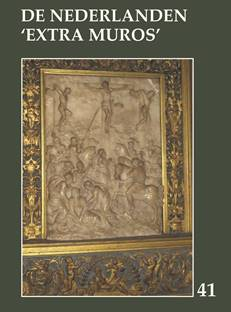

> publicaties > De Nederlanden
‘extra muros’ 41 (2019)

Ook dit 41e Jaarboek De
Nederlanden ‘extra muros’ brengt weer een
breed palet aan bijdragen over de randgebieden van onze Lage
Landen die deel uitmaken van ons geschiedkundig erfgoed. En als
steeds openen we ook deze editie met de korte bijdrage die zowat
in een notendop het “programma” van Zannekin verwoordt.
Luc Dequeker
staat stil bij de symboliek die verweven zit in De
Romaanse doopvont van Noordpeene, terwijl Jan van
Tongeren toelichting brengt bij De
Doornikse doopvonten in Zedelgem en Winchester.
Petrus Dathenus en
Nicasius Ellebodius,
twee Kasselse zonen, kregen in 2018
eindelijk een memoriebord in hun geboorteoord. Wido
Bourel schetste toen hun leven en verdiensten. In
de rubriek achteraan leest u een verslag van de
onthullingsplechtigheid en hier alvast Wido’s toespraak.
Johan Hellinx
onthult in zijn De Franse Revolutie
gezien vanop de zijlijn: het beeld van de Franse bezetter in
enkele historische romans van Clara Viebieg en André Demedts
de parallelle en uiteenlopende tijdslijnen in het
oeuvre van beide auteurs.
Wim van Heugten besteedt
aandacht aan leven en werk van Friedrich Gorissen,
de Nederrijnse historicus, die reeds in het allereerste Zannekin Jaarboek
getuigde van het Nederlandse wezen van zijn geboortestreek.
Omwille van de verstrekkende historische
betekenis van zijn toenmalig (1975) getuigenis hernemen we Friedrich
Gorissen’s Nederland aan de
Nederrijn, Batavia extra muros.
In Grijze vrouwen voor
Gelre’s hertogen; het klooster Gravendaal bij Goch
laat Ruud
Bruijns ons kennis maken met het Huis van Gelre en
de cisterciënzerorde die mee aan de oorsprong lag aan het idee om
van Gravendaal het begrafenisoord te maken van dit gravengeslacht.
Henk de Boer verrast
ons met zijn breed essay over Holland in Pruisen, een
mythe ontraadselt. Mede aan de hand van
Vondels Gysbrecht van
Amstel verkent hij voor ons het toenmalige roerige
tijdsbestek van onze Nederlandse geschiedenis, ten gevolge waarvan
Gijsbrecht de wijk diende te nemen. Vondel suggereerde dat “Ghy (van Amstel) trekt na’et vette land van
Pruissen… // Ghy zult in dit gewest een stad, Nieuw Holland,
bouwen…“. Maar omtrent de geschiedenis van Pruisisch
Holland is daarmee niet alles onthuld – toont de auteur ten
overvloede aan.
Heike Düselder
tekende al aanwezig in het Zannekin Jaarboek 15 (1993) met een
essay over een Oost-Fries thema. Thans tekent ze present met een
bijdrage over de Culturele betrekkingen
tussen de Nederlanden en Noordwest Duitsland in de context
van de confessionalisering en het gereformeerde
Gemeenteleven, waarbij de taaltoestanden in
het Oost-Friesland van de 18e eeuw een normerende rol speelden.
Met zijn Laatmiddeleeuwse
Amsterdamse kerkelijke kunst in een Nederrijnse stadje: de
monstrans in de Sint-Niklaaskerk van Kalkar
duikt Jan van Tongeren
voor de tweede maal op in deze jaarboekeditie. Hij verhaalt hoe de
familie van Jacob Claesz Brouwer vanuit Amsterdam in Kalkar
belandde en met hen de monstrans en ook tal van andere kerkelijke
kunstwerken.
Op het verhaal over de Doornikse
doopvont van Noordpeene en de rede bij de onthulling van de
memorieplaat voor Dathenus en Ellebodius te Kassel na, komen de
Franse Nederlanden er in dit jaarboek eerder bekaaid van af. Leo
Camerlynck brengt in deze evenwel wat evenwicht
met zijn bijdragen over Johannes Despauterius
uit Komen en met Belle (Bailleul) in
Frans-Vlaanderen. Naast een terugblik op de
geschiedenis van het stadje stippelde hij daarbij meteen een
wandelroute uit die de bezoeker beslist van dienst kan zijn bij de
verkenning van het ook toeristisch aantrekkelijke Belle.
Met dezelfde auteur verwijlen we
tenslotte ook nog even bij de dichter van het In
Flanders Fields, John MacCrae,
vooraleer met de Kroniek en
boekbesprekingen ons jaarboek traditioneel af te sluiten.
______________________
N.a.v.
Jaarboek
De Nederlanden ‘extra muros’ 41 (2019).
Gen. 208 p. Ledenprij 29 €; niet-leden 35 €. Te bestellen via
overschrijving van dit bedrag op rekening BE13 4648 2202 5139
t.n.v. Vereniging/Stichting ZANNEKIN, Paddevijverstraat 2,
B.8900 Ieper
|
omvang
|
208 pagina's |
|
ISBN
|
9789071326400 |
|
prijs leden (inclusief verzendingskosten)
|
€ 29,00 |
|
prijs niet-leden (exclusief
verzendingskosten)
|
€ 35,00 |